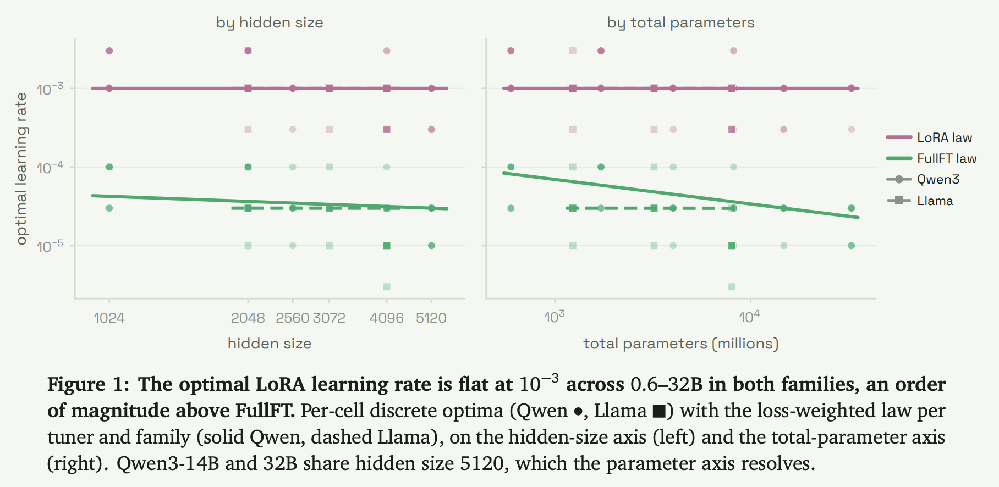
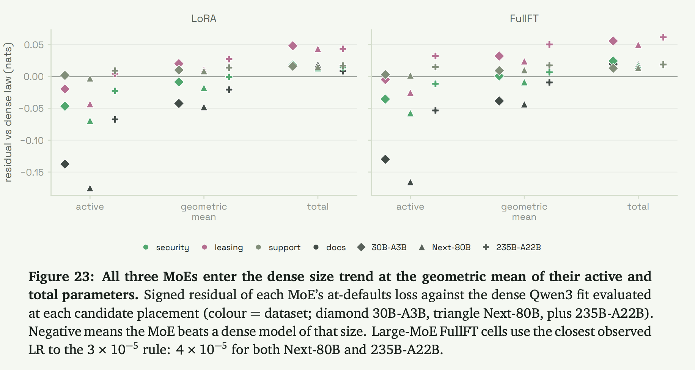

近年、オープンソースの基盤モデルを特定のタスクに適応させるアプローチとしてSupervised Fine-Tuning (SFT)が広く普及している。しかし、SFTにおける学習率、バッチサイズ、LoRAの設定、エポック数、オプティマイザの選択といった意思決定は、事前学習からの流用や経験則、あるいはその都度のアドホックなパラメータ探索に依存することが多かった。
こうした状況に対し、Basetenは顧客モデルのファインチューニング経験に基づいたテクニカルペーパー「Post-Training Science for Supervised Fine-Tuning」を公開した。本研究は、匿名化された実際のプロダクションSFTデータセットを用い、DenseモデルおよびMixture-of-Experts (MoE)の複数ファミリーに対して、統制された環境でハイパーパラメータの影響を測定している。
本稿では、この論文から得られた知見をもとに、SFTのプロセスを勘や経験則からデータ駆動型の「科学」へと昇華させるための実践的アプローチと理論的背景を解説する。
1. 学習率とバッチサイズの法則性
事前学習においては、学習率とバッチサイズの間に線形スケーリング則などの明確な関係が確立されているが、SFTにおけるこれらの振る舞いは十分に検証されていなかった。
本研究におけるQwen3およびLlamaファミリーでのスイープ結果は、驚くべき一貫性を示している。LoRAの最適学習率は、モデルのスケール（0.6Bから32B）やファミリーを問わず \(1 \times 10^{-3}\) 付近で平坦なプラトーを形成する。一方、Full Fine-Tuning (FullFT) の最適学習率は、およそ \(3 \times 10^{-5}\) と、LoRAと比較して約1オーダー（約33倍）低くなる。

さらに、最適学習率はバッチサイズに対してほぼ不変であり、トークン数が増加した場合にのみわずかに上昇する傾向が見られた。バッチサイズの選択は、Validation Lossに対する絶対的な最適値が存在するというよりも、計算ステップ数（学習時間）とメモリ上限との間のトレードオフとして機能する。 また、上限の学習率（例: \(3 \times 10^{-3}\)）に近づくと、大規模モデルほど先に学習の不安定性（ロスが突然上昇する現象）を示すことが確認されている。
2. LoRAハイパーパラメータの容量とスケーリング
LoRAのアーキテクチャ設計において、Rank (\(r\)) とスケーリング係数 (\(\alpha\)) はアップデートの表現力を決定する重要な要素である。論文ではこれらのパラメータのスイープ実験が行われた。
実験の結果、Rankは64まではValidation Lossの低下に寄与し有用なキャパシティを提供するが、それ以上（例: \(r=128\)）に増やしても性能の向上はプラトーに達することが判明した。同時に、すべてのテストシナリオにおいて \(\alpha = 32\) が最適なスケールであることが確認された。
したがって、標準的なSFTにおいては、デフォルト設定として \(r=64, \alpha=32\) を採用することが推奨される。計算リソースやメモリ消費を抑えたい場合の安価な代替案としては \(r=32\) が妥当であり、性能低下を最小限に抑えつつ学習コストを削減させることが可能である。
3. Validation Lossはダウンストリーム性能を予測できるか？
モデル選択において我々は暗黙的にValidation Lossの最小値に依存しているが、これが実際のプロダクションタスクにおける性能（ダウンストリーム性能）を正しく反映しているかは自明ではない。
論文の検証によれば、同一のモデルファミリー、データセット、そして同一のファインチューニングレシピ（例えば、学習率とバッチサイズのスイープ）の内部においては、Validation Lossはダウンストリーム性能の極めて信頼できる予測指標として機能する（Spearman相関 \(-0.38 \sim -0.88\)）。 しかし、この予測能力は異なるモデルファミリー間には転移しない。たとえば、LlamaモデルがQwenモデルよりも低いNLL（Negative Log-Likelihood）を達成したとしても、タスクの評価スコアでは劣るというケースが観察されている。
また、最適化理論において汎化性能と関連付けられるLoss landscapeの平坦性（Fisher traceを介してHessianのトレースとして測定される）は、同一Lossレベルにおけるダウンストリーム性能の差異を説明するには不十分であった。ただし、この平坦性は後述する「汎用的な命令追従能力」の保持と強く相関することが示されている。
4. スケーリングの傾向とMixture-of-Experts (MoE)
事前学習におけるスケーリング則と同様に、SFTにおいてもロスはモデルサイズに対して飽和するべき乗則（Saturating power law）に従う。興味深いことに、FullFTはLoRAよりも急激なロスの低下を示す。これは、小規模モデルでは存在したFullFTとLoRAの性能差（LoRAはFullFTの改善幅の約98%をカバーする）が、モデルスケールの拡大に伴ってさらに縮小していくことを意味している。
では、Mixture-of-Experts (MoE) モデルはこのスケーリング則のどこに位置付けられるのだろうか。Qwen3-30B-A3BなどのMoEモデルを評価した結果、MoEモデルは単純なActive parametersのサイズでも、Total parametersのサイズでもなく、それらの幾何平均（Geometric mean）に相当するサイズのDenseモデルと同等のSFT性能（ロス）を示すことが明らかになった。
さらにデータ量に関しても、同じデータを反復するより、新鮮なトレーニングデータを追加することが一貫してロスを低下させるが、その改善幅はモデルのサイズよりもデータセットの性質（タスクの難易度やトークン数など）に強く依存する。

5. オプティマイザの選択：AdamWとMuonの比較
標準的なLarge Language Model (LLM) の学習にはAdamやAdamWが用いられるが、より洗練された構造認識型オプティマイザの恩恵も注目されている。本研究では、パラメータの更新を直交化するオプティマイザであるMuonをAdamWと比較している。
MuonはAdamWよりもさらに低い最適学習率で動作し、結果としてわずかに低いValidation NLLと、より平坦なLoss minimumに到達する。近年の研究動向が示唆するように、オプティマイザの選択はLLMの汎化性能やノイズに対するロバスト性に直接影響を与える。本論文でも、タスク固有の性能においては両者に大きな差はなかったものの、Muonが導く平坦なLoss minimumは、モデルの汎用的な命令追従能力（IFEvalによって測定）の優れた保持と明確に相関していることが示された。
これは、特定のタスクに特化する過程で元の汎用能力が失われるCatastrophic forgettingを、オプティマイザの選択によってある程度緩和できる可能性を示唆している。
6. 学習のエポック数：過学習とCapability Erosionのジレンマ
SFTにおいてデータを何周させるか（エポック数）は、常に悩ましい問題である。測定結果は明確な事実を示している。
通常、Validation Lossは約2エポックで最小値を迎え、それ以降は上昇に転じる（過学習）。しかし、タスク固有の評価スコアはLossが上昇し始めても低下せず、プラトーを維持するか、さらに向上することすらある。
一見するとエポック数を増やすことにペナルティはないように思えるが、ここで代償となるのが汎用的な命令追従能力（IFEval）である。エポック数を増やすほど、モデルは訓練データに過度に特化し、元の基盤モデルが持っていた汎用的な指示理解能力が侵食（Capability Erosion）されていく。
したがって実践的なガイドラインとしては、学習は概ね2エポック程度に留め、それ以上の性能向上を望む場合は無闇にエポック数を増やすのではなく、新鮮な（Freshな）訓練データを追加することにリソースを投資すべきである。
まとめ
Basetenによる本研究は、SFTにおける様々なハイパーパラメータの挙動に対して、実証的データに基づいた強力な洞察を提供している。
- 推奨されるデフォルト値: LoRAの設定は \(r=64, \alpha=32\)、学習率は \(1 \times 10^{-3}\) が堅牢な出発点である。
- 評価指標の信頼性: 同一条件のレシピ内では、モデル選択の指標としてValidation Lossを信頼してよい。
- MoEのスケーリング: Mixture-of-Experts (MoE) は、Active parametersとTotal parametersの幾何平均サイズとしてスケーリングする。
- データの優先順位: タスク性能と汎用能力のトレードオフを考慮し、2エポック以降は同一データの反復を避け、Fresh dataの追加を優先する。
- オプティマイザの影響: 汎化性能と汎用能力の維持には、Muonのような更新を直交化するオプティマイザの採用が有効な手段となり得る。
これらのデータ駆動型の推奨事項を活用することで、我々はSFTにおける無駄なパラメータ探索を減らし、より効果的かつ予測可能なLLMのチューニングを実現できるようになるだろう。